Testdesigntekniker
Testutvecklingsprocesen
- Testanalys - analysera testbasens dokumentation för att se vad som skall testas, d.v.s. identifiera testvillkoren. Säkerställ spårbarhet från testvillkor till specifikationer och krav.
- Testdesign - skapa testfall och testdata. Ett testfall består av indata, förutsättningar för utförande, förväntat resultat och sluttillstånd
- Testimplementering - En testinstruktion tas fram för varje testfall som beskriver en sekvens av åtgärder för genomförandet av ett test. Vid automatisk testning tas ett testskript fram.
Kategorisering av tekniker för testdesign
- Specifikationsbaserade tekniker (black-box)
- Strukturbaserade tekniker (white-box)
- Erfarenhetsbaserade tekniker
Specifikationsbaserade tekniker
- Modeller används för att beskriva problemet som skall lösas, program eller dess komponenter. De kan vara formella eller informella.
- Från dessa modeller härleds testfallen systematiskt.
- Tekniker: Ekvivalensklassindelning, gränsvärdesanalys, beslutstabeller, tillståndsbaserad testning, användningsfallsbaserad testning
Strukturbaserade tekniker
- Kunskap om hur systemet är uppbyggt, exempelvis kod och design, används för att härleda testfall.
- Det går att mäta hur stor andel av ett program som täcks av testfall och fler testfall kan skrivas för att systematiskt öka täckningsgraden.
- Tekniker: Kodsatstestning, beslutstestning.
Erfarenhetsbaserade tekniker
- Kunskap och erfarenhet hos individer används för att härleda testfall:
- En källa till information är kunskap om programvaran, dess användning och dess miljö hos testare, utvecklare, användare eller andra intressenter.
- Kunskap om vanliga och sannolika fel och deras fördelning är en annan källa till information.
- Tekniker: Felgissning, utforskande testning
Specifikationsbaserade tekniker
- Ekvivalensklassindelning
- Gränsvärdesanalys
- Testning m.h.a. beslutstabeller
- Tillståndsbaserad testning
- Användningsfallsbaserad testning
Ekvivalensklassindelning
- Vid ekvivalensklassindelning delas systemets eller programmets indata upp i grupper eller klasser där indata i varje grupp kommer att uppvisa likartat beteende, det vill säga de kommer sannolikt att hanteras på samma sätt.
- Ekvivalensklasser, som är resultatet av indelningen, kan identifieras för indata som är både giltigt (dvs. giltiga värden som skall accepteras) och ogiltigt (dvs. för ogiltiga värden som skall avfärdas).
- Klasser kan också identifieras även för utdata, interna värden, tidsberoende värden (exempelvis före eller efter en händelse) samt för gränssnittsparametrar (nyttiga vid integrationstest).
- Tester kan skapas för att täcka alla giltiga och ogiltiga ekvivalensklasser.
- Ekvivalensklassindelning är användbart på alla testnivåer.
- Tekniken kan användas för att uppnå målen för in- och utdatatäckning.
EKVIVALENSKLASSINDELNING exempel
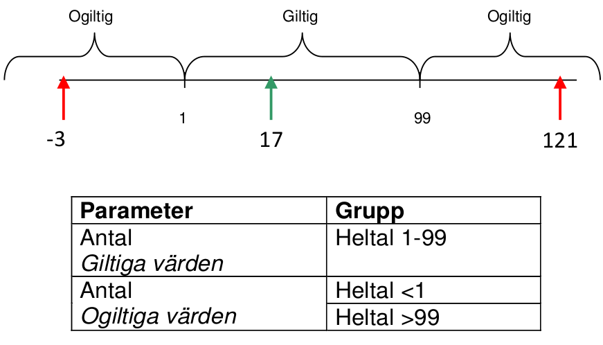
Gränsvärdesanalys
- Beteendet vid gränserna av varje ekvivalensklass uppvisar en större risk för fel än beteendet för värden inom ekvivalensklassen, därför är gränsvärdestestning ett fruktbart sätt att upptäcka fel.
- Gränserna består av det minimala och det maximala värdet inom en klass.
- Ett gränsvärde för en giltig klass kallas för giltigt gränsvärde, ett gränsvärde för en ogiltig klass för ogiltigt gränsvärde.
- Det går att konstruera tester som täcker både giltiga och ogiltiga gränsvärden. Vid designen av ett testfall, väljs ett test för varje gränsvärde.
- Gränsvärdesanalys kan användas på alla testnivåer.
- Gränsvärdesanalys kan användas vid många olika testproblem t.ex. ekvivalensklasser för inmatningsfält, tids- eller tabellgränser.
Gränsvärdesanalys exempel
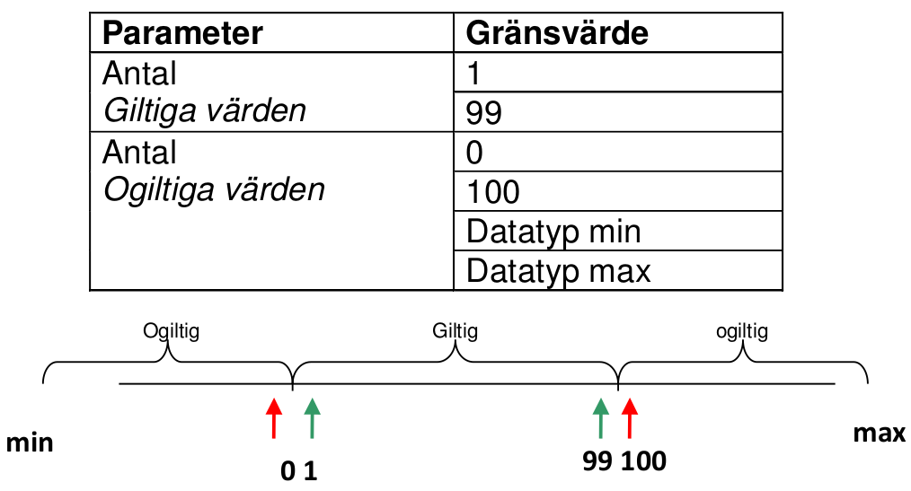
Syfte
Reducera det totala antalet tester genom att gruppera ihop data eller testfall som testar samma sak och sen nöja sig med att testa ett värde ur varje grupp.
Tanken är att om du förväntar dig samma resultat från två tester räcker det att köra en av dem. En grupp av tester är ekvivalenta om:
- De testar samma sak
- Ett av dem hittar en avvikelse så gör troligen de andra det också
- Ett av dem inte hittar en avvikelse så gör inte heller de andra det
Steget efter att du tagit fram grupperna innebär att du väljer värden på och runt gränserna för varje grupp.
Rekommendationen för hur många värden du ska välja varierar beroende på vem du frågar, vanligt är två-tre värden per gräns.
För numeriska intervall är det naturligt att hitta gränsvärden, för andra typer av grupper är det inte lika lätt – ofta saknas gränsvärden.
exempelmall
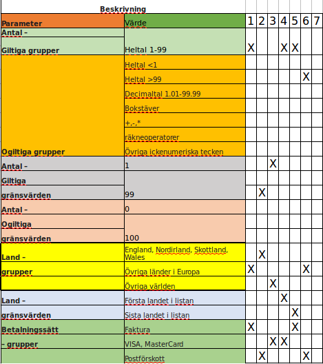
Beslutstabeller
- Beprövat sätt att fånga systemkrav som består av logiska beroenden och att dokumentera ett systems interna uppbyggnad.
- Tabellerna kan användas för att dokumentera komplex affärslogik som ett system skall implementera.
- För att skapa beslutstabellerna analyseras specifikationerna så att systembeteenden och de villkor som påverkar dessa beteenden kan identifieras.
- Systembeteenden och de indatavillkor som påverkar dessa beteenden uttrycks ofta som sant eller falskt (Boolskt).
- En beslutstabell innehåller de utlösande villkoren, ofta i kombination med sant och falsktvärden för all indata och tillsammans med den resulterande händelsen.
- Varje kolumn i tabellen motsvarar en regel i affärslogiken som beskriver vilken unik kombination av förhållanden som skall resultera i vilka händelser. Ofta beräknas täckningen genom att ha minst ett test per kolumn i tabellen, något som normalt innebär att alla kombinationer av utlösande villkor täcks.
Beslutstabell struktur
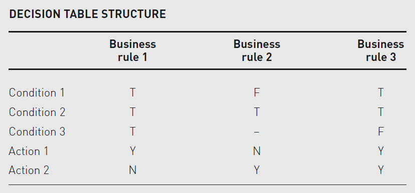
Business rule 1 requires all conditions to be true to generate action 1. Business rule 2 results in action 2 if condition 1 is false and condition 2 is true but does not depend on condition 3. Business rule 3 requires conditions 1 and 2 to be true and condition 3 to be false.
Beslutstabell exempel
A supermarket has a loyalty scheme that is offered to all customers. Loyalty cardholders enjoy the benefits of either additional discounts on all purchases (rule 3) or the acquisition of loyalty points (rule 4), which can be converted into vouchers for the supermarket or to equivalent points in schemes run by partners. Customers without a loyalty card receive an additional discount only if they spend more than £100 on any one visit to the store (rule 2), otherwise only the special offers offered to all customers apply (rule 1).
beslutstabell exempel
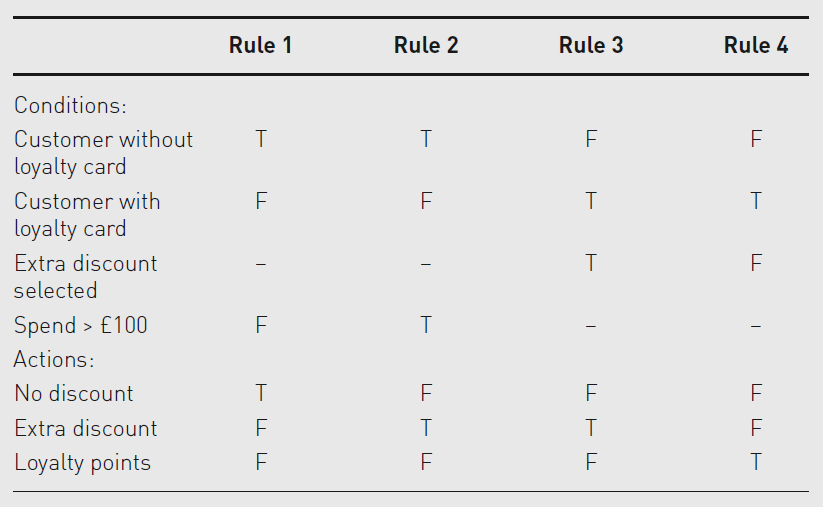
Tillståndsbaserad testning
Ett system kan visa olika svar eller resultat beroende på vilka villkor och vilket tidigare händelseförlopp (dess olika tillstånd) som skett.
- Tillståndsgrafer (eng state machines,state transition testing) är en modellbaserad teknik för att ta fram testfall.
- Den arbetar med händelsestyrda system, ofta i realtid och är vanlig inom bland annat digitalteknik och elektronik i hårdvara.
- Typiska användningsområden är radio, tv, tvättmaskin, diskmaskin och trafikljus.
Definitioner
- Tillstånd - Specifika värden på de parametrar som definierar varje tillstånd
- Händelser - Vad kan hända?
- Tillståndsgraf - Tillstånd och hur de är länkade samman, innehåller oftast endast giltiga övergångar
- Tillståndstabell - Alla tillstånd och alla händelser i en matris
- Partitionering av data - Hur grupperar vi händelser, finns gränsvärden? Tid, samtidiga användare.
- Täckning - Metoder att täcka modellerna
Exempel
A hill-walker’s watch has two modes: Time and Altimeter. In Time mode, pressing the Mode switch causes the watch to switch to Alt mode; pressing Mode again returns to Time mode. While the watch is in Alt mode the Set button has no effect.
When the watch is in Time mode pressing the Set button transitions the watch into Set Hrs, from which the Hrs display can be incremented by pressing the Set button. If the Mode switch is pressed while the watch is in Set Hrs mode the watch transitions to Set Mins mode, in which pressing the Set button increments the Mins display. If the Mode button is pressed in this mode the watch transitions back to Time mode.
Note that not all events have an effect in all states. Where an event does not have an effect on a given state it is usually omitted, but it can be shown as an arrow starting from the state and returning to the same state to indicate that no transition takes place; this is sometimes known as a ‘null’ transition or an ‘invalid’ transition.
exempel tillståndsgraf
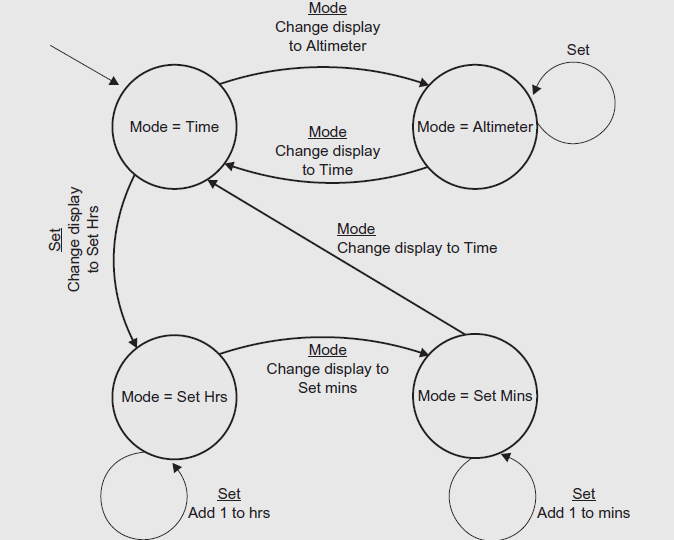
Exempel tillståndstabell
Utifrån tillståndstabellen kan vi enkelt skapa upp de testfall som behövs för att trigga de olika händelserna.
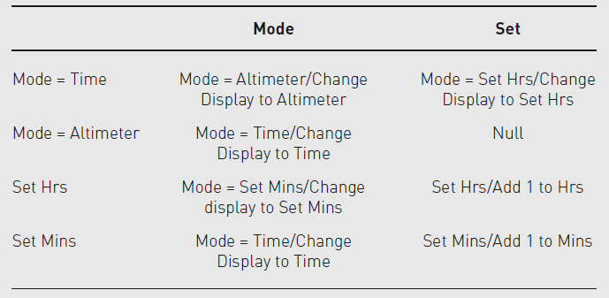
Användningsfallsbaserad testning (1/2)
- Tester kan härledas från användningsfall. Ett användningsfall beskriver interaktionen mellan aktörer, användare eller system, vilket producerar ett resultat av värde för en systemanvändare eller en kund.
- Användningsfall kan beskrivas på en abstrakt nivå (teknikoberoende affärsflöden på affärsprocessnivå), eller på systemnivå (systemanvändningsfall på funktionalitetsnivå).
- Varje användningsfall har förvillkor som måste vara uppfyllda för att användningsfallet skall fungera.
- Varje användningsfall avslutas med ett antal slutvillkor, vilka utgörs av observerbara resultat och systemets sluttillstånd när användningsfallet genomförts.
- Det krävs också att systemet har ett avsett sluttillstånd när användarscenariot är avslutat.
- Ett användningsfall har ett huvudflöde, dvs. det mest troliga scenariot, men kan även ha alternativa scenarion.
ANVÄNDNINGSFALLSBASERAD TESTNING (2/2)
- Användningsfall beskriver “processflödet” genom ett system baserat på dess troliga användning, så testfall som härleds från användningsfall är mycket användbara för att hitta fel i processflödet i den verkliga användningen av systemet.
- Användningsfall är mycket användbara vid framtagning av acceptanstestfall då kunder eller användare deltar i testfallsframtagningen.
- De hjälper också till att hitta integrationsfel som orsakas av interaktion mellan och påverkan av, olika komponenter, som man inte hittar då man testar programkomponenterna var för sig.
- Testdesign utifrån användningsfall kan kombineras med andra specifikationsbaserade tekniker för testdesign.
Övning ekvivalensgrupper
Testa en liten dialog för hantering av manuella utbetalningar. Uppgiften är att ta fram lämpliga ekvivalensgrupper och gränsvärden, både giltiga och ogiltiga, för följande fyra variabler:
- Efternamn:20 tecken, alfanumeriskt fält
- Utbetalningssätt: personkonto, bankkonto eller utbetalningskort
- Belopp: heltal, 9 tecken
- Skatt:0-100%
Svar övning
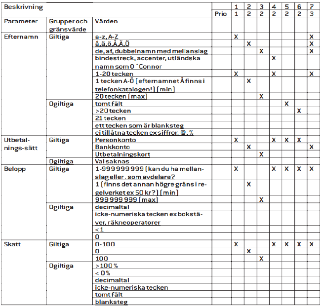
Övning beslutstabeller
Vi har ett system som hanterar sakförsäkring där man kan försäkra t.ex. sin bil • Den funktion som räknar ut självrisken för bilförsäkringen är ett objekt av lagom storlek för vårt exempel
Regelverket för funktionen ser ut på följande sätt:
- R0: Som utgångsläge är självrisken för samtliga kunder 500 kronor
- R1: Ogifta män under 25 års ålder har en ökad självrisk med 1500 kronor
- R2: Gifta män över 25 år och alla kvinnor över 25 år har 200 kronor i minskad självrisk
- R3: Samtliga personer mellan 45 och 65 har minskad självrisk med ytterligare 100 kronor
Svar övning 2 (1/3)
Som ett delsteg är det lämpligt att gruppera värdena:
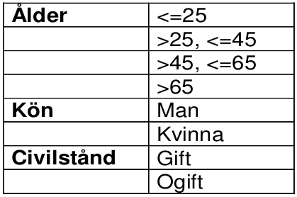
SVAR ÖVNING 2 (2/3)
Vi kan också ta fram ett beslutsträd.

SVAR ÖVNING 2 (3/3)
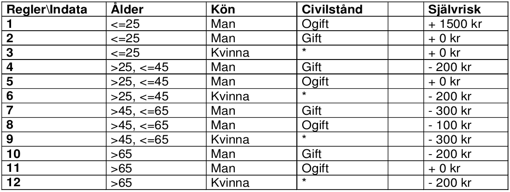
Strukturbaserade tekniker
Strukturbaserarad testning/white-boxtestning är baserad på att man identifierar strukturen av programmet eller systemet vilket visas genom följande exempel.
- Komponentnivån: Strukturen i en programvarukomponent, dvs. kodsatser, beslut, kodgrenar eller till och med specifika exekveringsvägar.
- Integationsnivån: Strukturen kan vara ett anropsträd, dvs. ett diagram där modulanrop till andra moduler visas
- Systemnivån: Strukturen kan vara en menystruktur, affärsflöde eller en websidas struktur.
Kodsatstestning och kodsatstäckning
- I komponenttestning är kodsatstäckning den utvärdering (i procent) som visar hur många exekverbara satser som har exekverats av en svit av testfall.
- I kodsatstestning skapar man nya testfall för att exekvera specifika kodsatser, vilket normalt ökar satstäckningen.
- Kodsatstäckning är antalet kodsatser som berörs av de (designade eller exekverade) testfallen dividerat med det totala antalet kodsatser i programvarukomponenten.
Övergripande Kodstruktur
Endast exekverbara satser räknas. Kommentarer och tomma rader räknas inte som kodsatser. Nedan har vi en eller tre exekverbara kodsatser (beroende på om man väljer att räkna BEGIN och END)
1 Non-executable statements
2 BEGIN
3
4 Executable statements
5
6 END
Sekvenser
Kodsatserna exekveras en i taget efter varandra. Nedan har vi tre exekverbara kodsatser som alla kan exekveras med ett testfall.
1 Read A
2 Read B
3 C = A + B
Villkor
Beroende på om ett villkor är SANT eller FALSKT tar vi olika vägar genom programmet. I fall ett nedan behöver vi två testfall för att få 100% kodsatstäckning, medan vi i fall två endast behöver ett testfall.
1 IF P > 3
2 THEN
3 X = X + Y
4 ELSE
5 X = X - Y
6 ENDIF
1 IF P > 3
2 THEN
3 X = X + Y
4 ENDIF
Iterationer
För iterationer, även kallade loopar, krävs bara ett testfall för full kodsatstäckning. Exempel: DO WHILE.., REPEAT..UNTIL
1 X = 15
2 Count = 0
3 WHILE X < 20 DO
4 X = X + 1
5 Count = Count + 1
6 END DO
1 X = 15
2 Count = 0
3 REPEAT
4 X = X + 1
5 Count = Count + 1
6 UNTIL X = 20
Beslutstestning och beslutstäckning
- Beslutstäckning, nära relaterat till bågtestning, är utvärderingen (i procent) av antalet beslutsutfall (t.ex. utfallen sant respektive falskt för en IF-sats) som har exekverats av en testfallssvit.
- Vid beslutstestning skapas testfall som ska exekvera utpekade beslutsutfall. Man kan representera en programvarukod med hjälp av en graf med bågar och noder. En nod med flera utgående bågar som beskriver överföring av kontroll till olika platser i koden representerar en beslutspunkt.
- Beslutstäckning är antalet beslutsutfall som berörs av de (designade eller exekverade) testfallen dividerat med det totala antalet beslutsutfall som finns i programvarukomponenten.
- Beslutstestning är en form av kontrollflödestestning där ett specifikt kontrollflöde exekveras genom att en specifik exekveringsväg tas genom beslutspunkterma.
- Beslutstäckning är starkare än kodsatstäckning, eftersom 100% beslutstäckning garanterar 100% kodsatstäckning, men inte tvärtom.
Control flow graph
För att beräkna beslutstäckningen kan vi använda oss av en förenklad flödesgraf som enbart visar villkoren. För att få full beslutstäckning måste vi ta alla vägar, oavsett om dessa innehåller några exekverbara satser eller inte.
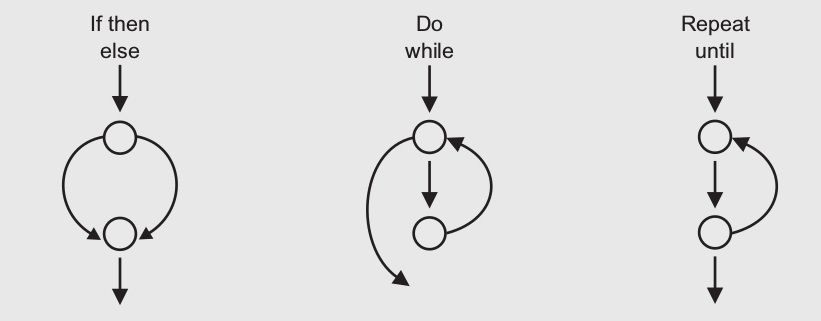
Exempel
För att beräkna både kodsatstäckning och beslutstäckning kan vi använda oss av en hybridgraf med extra noder för exekverbara kodsatser. I det här fallet krävs bara ett testfall för kodsatstäckning, men två testfall för beslutstäckning.
1 Program Coverage Example
2 A, X: Integer
3 Begin
4 Read A
5 Read X
6 If A > 1 AND X = 2
7 Then
8 X = X/A
9 Endif
10 If A = 2 OR X = 2
11 Then
12 X = X + 1
13 Endif
14 End
Andra strukturbaserade tekniker
- Utöver beslutstäcking finns andra kodtäckningsmått, t.ex. villkorstäckning och villkorskombinationstäckning.
- Kodtäckningskonceptet kan också användas på andra testnivåer, t.ex. på integrationsnivån, där procenten av moduler, komponenter eller klasser som har blivit exekverade av en testfallssvit kan uttryckas som modul-, komponent- eller klasstäckning.
- För strukturbaserad testning av kod är verktygsstöd användbart.
Övning
Hur många testfall krävs för kodsatstäckning respektive beslutstäckning för följande program:
1 Program BestInterest
2 Interest, Base Rate, Balance: Real
3
4 Begin
5 Base Rate = 0.035
6 Interest = Base Rate
7
8 Read (Balance)
9 If Balance > 1000
10 Then
11 Interest = Interest + 0.005
12 If Balance < 10000
13 Then
14 Interest = Interest + 0.005
15 Else
16 Interest = Interest + 0.010
17 Endif
18 Endif
19
20 Balance = Balance × (1 + Interest)
21
22 End
Svar övning
För kodsatstäckning krävs två testfall, och för beslutstäckning krävs tre testfall.
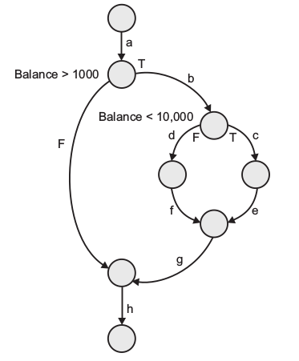
Övning 2
Hur många testfall krävs för kodsatstäckning respektive beslutstäckning för följande program
1 Program Check
2
3 Count, Sum, Index: Integer
4
5 Begin
6
7 Index = 0
8 Sum = 0
9 Read (Count)
10 Read (New)
11
12 While Index <= Count
13 Do
14 If New < 0
15 Then
16 Sum = Sum + 1
17 Endif
18 Index = Index + 1
19 Read (New)
20 Enddo
21
22 Print (“There were”, Sum, “negative numbers in the input stream”)
23
24 End
Svar övning 2
Med rätt indata räcker det med ett testfall för att uppnå både kodsatstäckning och beslutstäckning, t.ex. sätt Count=1 och New=1 initialt och sätt sedan New=-1 inne i loopen.
Erfarenhetsbaserade tekniker
Erfarenhetsbaserad testning är när tester skapas baserat på testarens skicklighet och intuition och hans/hennes erfarenhet av liknande applikationer och teknologier. Som komplement till mer systematiska testtekniker, kan dessa tekniker vara mycket värdefulla genom att testfall identifieras, vilka annars inte skulle hittas via de mer formella teknikerna. Dock varierar effektiviteten hos denna typ av testning med erfarenheten hos testaren.
Vanligt förekommande erfarenhetsbaserade tekniker är felgissning och utforskande testning.
Felgissning
En vanligt förekommande erfarenhetsbaserad teknik är felgissning, i vilken testare förutspår potentiella defekter utifrån sin tidigare erfarenhet. Ett strukturerat sätt att arbeta med felgissning är att göra en lista av möjliga defekter och därefter skriva tester som blottar dessa defekter. Detta systematiska angreppssätt kallas för felattack. Dessa listor på defekter och felsymptom kan byggas upp baserat på erfarenhet, tillgängliga fel eller felsymptombeskrivningar samt från grundläggande kunskap om varför program fallerar.
Utforskande testning
Utforskande testing är en teknik som bygger på samtidig testdesign, testexekvering, testloggning och inlärning. Den baseras på ett test charter som innehåller testmål och utförs inom väldefinierade tidsgränser. Strategin är mest användbar när det är få eller inte tillräckliga specifikationer och en extrem tidspress, samt som stöd eller komplement till annan, mer formell testning. Tekniken kan tjäna som en kontroll av testprocessen för att försäkra sig om att de mest allvarliga felen hittas.
Välja testtekniker
Val av testtekniker som skall användas beror på ett antal faktorer som, typ av system, lagar, föreskrifter och standarder, kundkrav eller kontrakt, nivå av risk, typ av risk, testdomän, testmål, tillgänglig dokumentation, kunskap hos testarna, tid och budget, utvecklingslivscykel, andvändningsfallsmodeller och tidigare erfarenhet av olika typer av defekter som man hittat.
Vissa tekniker är mer användbara vid vissa situationer än andra och vissa tekniker är mest användbara på en testnivå, medan andra kan användas på alla testnivåer.
Under testfallsdesign använder sig testare vanligtvis av en kombination av testtekniker inklusive process-, regelverks- och datadrivna tekniker, för att säkerställa tillräcklig testtäckning av objektet som testas.